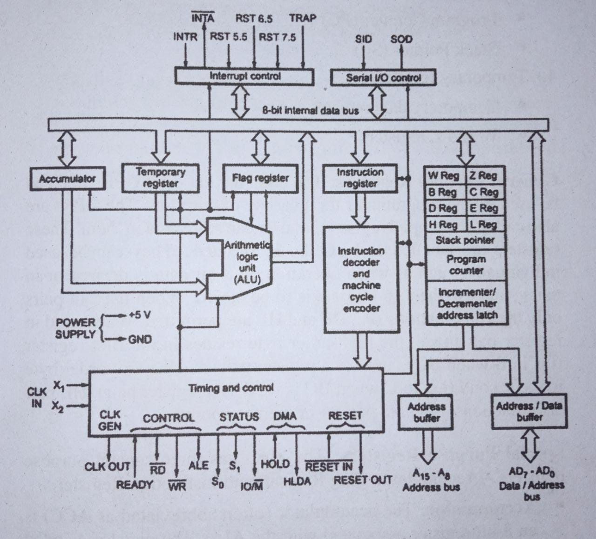
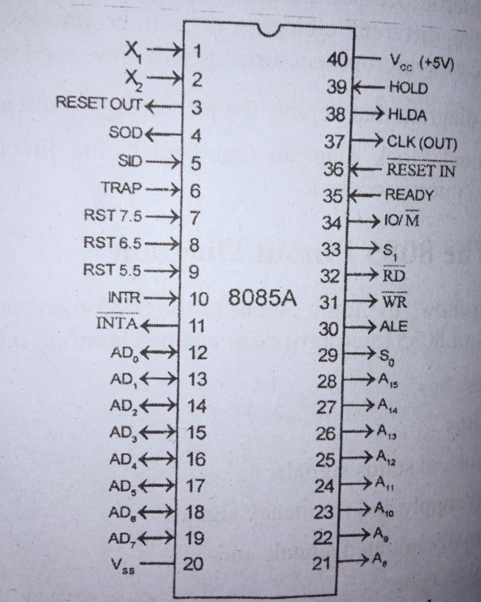

- The Intel 8085 is an 8-bit microprocessor introduced by Intel in 1977.
- It was binary compatible with the more-famous Intel 8080 but required less supporting hardware, thus allowing simpler and less expensive microcomputer systems to be built.
- The "5" in the model number came from the fact that the 8085 requires only a +5-Volt (V) power supply rather than the +5 V, −5 V and +12 V supplies the 8080 needed.
- The main features of 8085 Microprocessor are:
- It is an 8-bit microprocessor.
- It is manufactured with N-MOS technology.
- The first 8 lines of address bus and 8 lines of data bus are multiplexed AD0-AD7
- Data bus is a group of 8 lines D0-D7.
- It supports external interrupt request.
- A 16-bit program counter (PC) and a 16-bit stack pointer (SP).
- It is enclosed with 40 pins DIP (Dual in line package).
- It requires a signal +5V power supply and operates at 3.2 MHZ single phase clock.
1. Introduction To Intel 8085:
2. 8085 Architecture:
8085 consists of various units as shown in Fig. 1 and each unit performs its own functions. The various units of a microprocessor are listed below
- Accumulator
- Arithmetic and logic Unit
- General purpose register
- Program counter
- Stack pointer
- Temporary register
- Flags
- Instruction register and Decoder
- Address bus and Data bus
- Interrupt control
- Timing and Control unit
- Address buffer and Address-Data buffer
Accumulator :
- Accumulator is nothing but a register which can hold 8-bit data. Accumulator aids in storing two quantities.
- The data to be processed by arithmetic and logic unit is stored in accumulator.
- It also stores the result of the operation carried out by the Arithmetic and Logic unit.
- The accumulator is also called an 8-bit register.
- The accumulator can be used to send or receive data from the Internal Data bus.
Arithmetic and Logic Unit :
- There is always a need to perform arithmetic operations like +, -, *, / and to perform logical operations like AND, OR, NOT etc.
- So, there is a necessity for creating a separate unit which can perform such types of operations.
- These operations are performed by the Arithmetic and Logic Unit (ALU). ALU performs these operations on 8-bit data.
- But these operations cannot be performed unless we have an input (or) data on which the desired operation is to be performed.
- After processing the necessary operations, the result is stored back in accumulator.
General Purpose Registers:
- Apart from accumulator 8085 consists of six special types of registers called General Purpose Registers.
- These general-purpose registers are used to hold data like any other registers. The general-purpose registers in 8085 processors are B, C, D, E, H and L.
- Each register can hold 8-bit data. Apart from the above function these registers can also be used to work in pairs to hold 16-bit data.
- They can work in pairs such as B-C, D-E and H-L to store 16-bit data.
- The H-L pair works as a memory pointer. A memory pointer holds the address of a particular memory location. They can store 16-bit address as they work in pair.
Program Counter :
- Program counter is a special purpose register.
- Consider that an instruction is being executed by processor. As soon as the ALU finished executing the instruction, the processor looks for the next instruction to be executed. So, there is a necessity for holding the address of the next instruction to be executed in order to save time.
- This is taken care by the program counter. A program counter stores the address of the next instruction to be executed.
- Microprocessor increments the program whenever an instruction is being executed, so that the program counter points to the memory address of the next instruction that is going to be executed.
- Program counter is a 16-bit register.
Stack Pointer :
- Stack pointer is also a 16-bit register which is used as a memory pointer. A stack is nothing but the portion of RAM
- Stack pointer maintains the address of the last byte that is entered into stack.
- Each time when the data is loaded into stack, Stack pointer gets decremented. Conversely it is incremented when data is retrieved from stack.
Temporary Register :
- As the name suggests this register acts as a temporary memory during the arithmetic and logical operations.
- Unlike other registers, this temporary register can only be accessed by the microprocessor.
- it is completely inaccessible to programmers.
- Temporary register is an 8-bit register.
Flags :
- Flags are nothing but a group of individual Flip-flops.
- The flags are mainly associated with arithmetic and logic operations.
- The flags will show either a logical (0 or 1) (i.e.) a set or reset depending on the data conditions in accumulator or various other registers.
- A flag is actually a latch which can hold some bits of information.
- It alerts the processor that some event has taken place.
- Intel processors have a set of 5 flags :
- Carry flags
- Parity flags
- Auxiliary carry flag
- Zero flags
- Sign flags
Instruction Register and Decoder:
- Instruction register is 8-bit register just like every other register of microprocessor.
- The instruction may be anything like adding two data's, moving a data, copying a data etc.
- . When such an instruction is fetched from memory, it is directed to Instruction register. So, the instruction registers are specifically to store the instructions that are fetched from memory
- There is an Instruction decoder which decodes the information present in the Instruction register for further processing.
Timing and Control Unit:
- Timing and control unit is a very important unit as it synchronizes the registers and flow of data through various registers and other units.
- This unit consists of an oscillator and controller sequencer which sends control signals needed for internal and external control of data and other units.
- The oscillator generates two-phase clock signals which aids in synchronizing all the registers of 8085 microprocessor.
- Control Signals: RD', WR', ALE
- ALE is used for provide control signal to synchronize the components of microprocessor and timing for instruction to perform the operation.
- RD (Active low) and WR (Active low) are used to indicate whether the operation is reading the data from memory or writing the data into memory respectively
- DMA Signals: HOLD, HLDA, READY
- HOLD: Indicates that another master is requesting the use of the address and data buses.
- HLDA: Indicates that the CPU has received the HOLD request and that it will relinquish the bus in the next clock cycle HLDA goes low after the Hold request is removed.
- READY: This signal synchronizes the fast CPU and the slow memory, peripherals. If READY is high during a read or write cycle, it indicates that the memory or peripheral is ready to send or receive data.
- Reset Signals: Reset in, Reset Out
- RESET IN : Sets the program counter to zero (0000H),Resets the interrupt enables and HLDA flip-flops and tri-states the data bus, address bus and control bus.
- RESET OUT: This active high signal indicates that the processor; is being reset. This signal is synchronized to the processor clock and it can be used to reset other devices connected in the system.
Interrupt control :
- As the name suggests this control interrupts a process.
- Consider that a microprocessor is executing the main program. Now whenever the interrupt signal is enabled or requested the microprocessor shifts the control from main program to process the incoming request and after the completion of request, the control goes back to the main program.
- Interrupt signals present in 8085 are :
- INTR
- RST 7.5
- RST 6.5
- RST 5.5
- TRAP
- INTR is maskable 8080A compatible interrupt.When the interrupt occurs the processor fetches from the bus one instruction, usually one of these instructions: One of the 8 RST instructions (RST0 - RST7).
- RST5.5 is a maskable interrupt. When this interrupt is received the processor saves the contents of the PC register into stack and branches to 2CH (hexadecimal) address.
- RST6.5 is a maskable interrupt. When this interrupt is received the processor saves the contents of the PC register into stack and branches to 34H (hexadecimal) address.
- RST7.5 is a maskable interrupt. When this interrupt is received the processor saves the contents of the PC register into stack and branches to 3CH (hexadecimal) address.
- TRAP is a non-maskable interrupt. When this interrupt is received the processor saves the contents of the PC register into stack and branches to 24H (hexadecimal) address
Serial Input/output control :
The input and output of serial data can be carried out using 2 instructions in 8085:
- SID-Serial Input Data
- SOD-Serial Output Data
Two more instructions are used to perform serial-parallel conversion needed for serial I/O devices:
- SIM
- RIM
Address bus and Data bus:
- We know that 8085 is an 8-bit microprocessor. So, the data bus present in the microprocessor is also 8-bits wide.
- But 8085 processor requires 16-bit address bus as the memory addresses are 16-bit wide.
- The 8 most significant bits of the address are transmitted with the help of address bus and the 8 least significant bits are transmitted with the help of multiplexed address/data bus.
- The eight-bit data bus is multiplexed with the eight least significant bits of address bus.
- The address/data bus is time multiplexed. This means for few microseconds, the 8 least significant bits of address are generated, while for next few seconds the same pin generates the data. This is called Time multiplexing.
- ALE signal holds the obtained address in its latch for a long time until the data is obtained and so when the microprocessor sends the data next time the address is also available at the output latch. This technique is called Address/Data demultiplexing.
3. Functional Block Diagram Of 8085:

4. Pin Diagram Of 8085:
The signals can be grouped as follows :
- Power supply and clock signals
- Address bus
- Data Bus
- Control and status signals
- Interrupts and externally initiated signals
- Serial I/O ports
Power supply and Clock frequency signals:
- Vcc + 5-volt power supply
- Vss Ground
- X1, X2: Crystal or R/C network or LC network connections to set the frequency of internal clock generator. The frequency is internally divided by two. Since the basic operating timing frequency is 3 MHz, a 6 MHz crystal is connected externally.
- CLK (output) - Clock Output is used as the system clock for peripheral and devices interfaced with the microprocessor.
Data Bus and Address Bus:
- AD0-AD7:-These are multiplexed address and data bus.
- So, it can be used to carry the lower order 8-bit address as well as the data.
- During the opcode fetch operation, in the first clock cycle the lines deliver the lower order address bus A0-A7.
- CPU can read or write data through these lines. A8-A15:- These are address bus used to address the memory location.
Control and status signals:
- ALE(Address latch Enable)
- RD(Read)
- WR(write)
- IO/M(Input-Output/Memory)
- S1 and S2
Externally initiated signals:
- TRAP(input)
- RST 5.5 ,RST 6.5 ,RST 7.5(Restart interrupts-Inputs)
- INTR(Interrupt request- Input)
- INTA(Interrupt Acknowledge - Output)
- HOLD(Input)
- HLDA(Hold Acknowledge -Output)
- RESET IN(Input)
- RESET OUT(output)
Serial I/O ports:
The 8085 has 2 signals to implement the serial transmission - SID (serial input data) and SOD (serial output data) . In serial transmission, data bits are sent over a single line, one bit at a time.